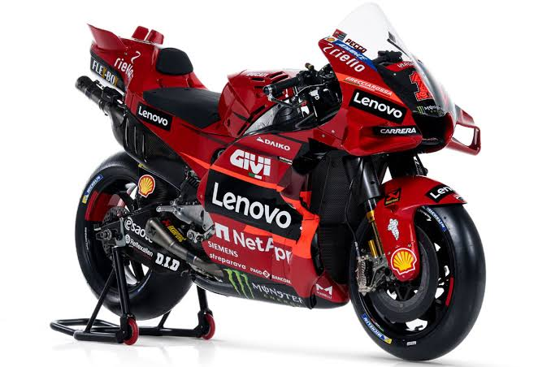

Moto GP
Présentation
Le MotoGP est la catégorie reine des Championnats du monde de vitesse moto, l'équivalent de la Formule 1 pour la moto
- Prototypes uniques : Ce ne sont pas des motos qu'on peut acheter dans le commerce. Elles sont construites sur mesure par des usines comme Ducati, Yamaha ou KTM.
- Puissance extrême : Les moteurs font 1 000 cm3. Ils développent plus de 250 chevaux pour un poids d'environ 157 kg.
- Vitesse : Elles dépassent souvent les 350 km/h en bout de ligne droite.
| nom | moteur | cylindrée |
| Ducati | V4 à 90° | 1000cm³ |
